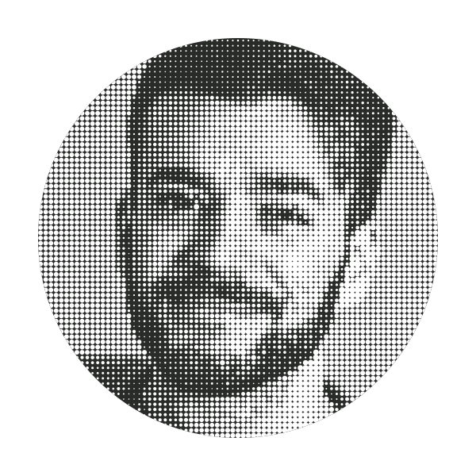

Coercion in psychiatry
The gap between formal human-rights principles and everyday psychiatric practice, especially in situations involving suicide risk, involuntary admission, and institutional responsibility.
Psychiatry & Psychotherapy · Ethics

I work at the intersection of psychiatry, ethics, law, and lived experience. My interests include coercion, autonomy, suicide care, forensic mental health, and medical training.
01 / Areas of inquiry
The gap between formal human-rights principles and everyday psychiatric practice, especially in situations involving suicide risk, involuntary admission, and institutional responsibility.
How should clinicians respond to suicide risk while respecting autonomy? My work examines decision-making capacity, the limits of protective intervention, and the moral weight of uncertainty in clinical care.
How psychiatric categories shape clinical reality, moral responsibility, and the ways suffering is recognised or dismissed.
02 / Ongoing questions
Research focus
I am developing research on how psychiatric coercion is justified, normalised, limited, and potentially replaced by more proportionate and non-coercive clinical approaches.
03 / Background
University of Zurich · IBME · Part-time
Research focused on mental health care.
University of Zurich · Switzerland
vfkv Munich · Germany
Curriculum for psychiatric physicians.
PDGR & WBV · Switzerland
Adult psychiatry and psychotherapy training programme.
University of Brescia · Italy
Combined Bachelor's & Master's Degree, Human Medicine and Surgery · 110/110
Medizinisches Center Scaletta · Chur
Primary care clinic.
Psychiatrische Dienste Graubünden PDGR · Cazis
Resident physician, then deputy consultant psychiatrist. Clinical work in correctional facilities, psychiatric expert reports, and research in forensic psychiatry and clinical ethics.
Psychiatrische Dienste Graubünden PDGR · Cazis
Psychotherapy and day-clinic group therapy.
Psychiatrische Dienste Graubünden PDGR · Cazis
Gerontopsychiatry, addiction psychiatry, psychotherapy, and emergency psychiatry.